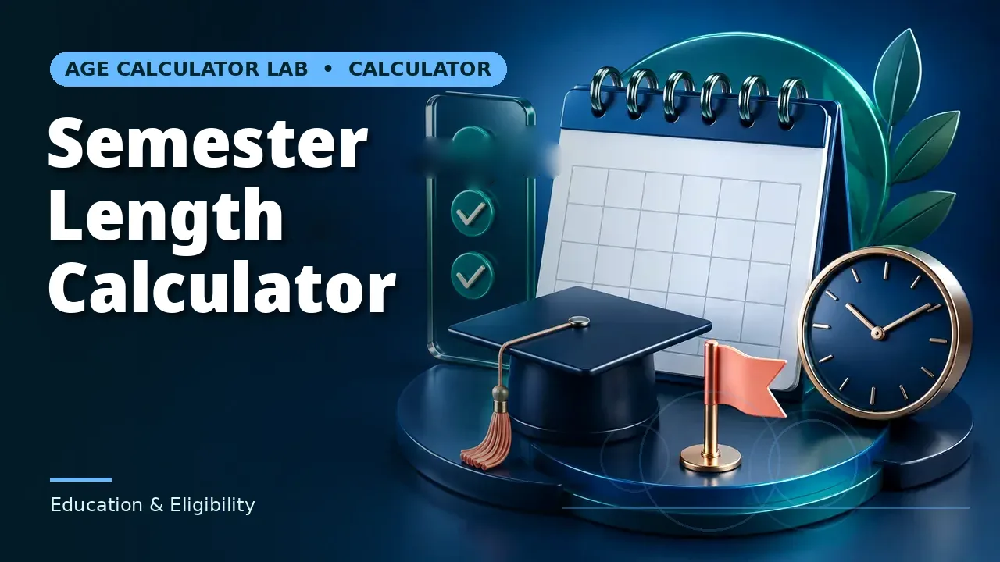

Quick answer
Calculate the calendar span first, then subtract breaks and non-teaching days to get contact weeks. Design the syllabus against the second figure.
Calendar span versus teaching weeks
The interval between a semester's first and last day is straightforward arithmetic. Teaching weeks are what remain after reading weeks, public holidays, institutional closures and assessment periods are removed — and the difference is routinely three or four weeks out of fifteen.
A syllabus designed against the calendar span will overrun. The failure shows up in the final third, when the remaining material no longer fits the remaining sessions and something has to be cut without planning. Calculating teaching weeks up front converts that into a design decision made early.
Use this guide with the right tool: Open the Semester Length Calculator for the length of a semester or term in weeks, days and calendar months. If the question shifts, compare it with the Weeks Between Dates Calculator or the Working Days in Month Calculator.
Contact hours, not just weeks
Weeks are a coarse unit for course design. What actually constrains a syllabus is contact hours, which depend on how many sessions per week and how long each is. A fifteen-week semester with two 90-minute sessions gives 45 contact hours; the same semester with one 3-hour session gives the same total but a very different rhythm.
Calculate contact hours explicitly and compare against the credit-hour requirement for the course. Where they do not match, the discrepancy is easier to resolve before term than during it.
Assessment eats more than its calendar footprint
Assessment periods consume teaching time in two ways: the sessions given over to assessment itself, and the preparation and revision time that displaces new material in the surrounding weeks. A one-week exam period typically costs closer to two weeks of forward progress.
Plan the syllabus to complete new content before the assessment window rather than running up to its edge. That leaves the final weeks for consolidation, which is both better pedagogy and better insurance against the schedule slipping.
Comparing semesters and institutions
Semester lengths vary widely — twelve to eighteen weeks is a common range — and the definition of a credit hour varies with them. Comparing course loads across institutions on week counts alone is unreliable.
Where a genuine comparison is needed, compare contact hours and expected independent study hours, both of which are usually documented. Those numbers are commensurable in a way that raw semester length is not.
Worked example
From 15 September 2026 to 19 December 2026 is 95 days, yet breaks and holidays cut it to about 12 teaching weeks and 36 contact hours at two 90-minute sessions weekly. Map your term the same way, subtracting breaks before counting time.
Two more terms, segmented
The worked example above subtracts in whole weeks, which is the right grain when the losses are whole weeks. Holidays do not remove weeks, though — they remove individual meetings, and how many depends on which weekdays the course meets. Running the same spring dates through two meeting patterns shows the difference.
Take a spring semester from Monday 12 January 2026 to Friday 8 May 2026. The calendar span is 116 days, or 16 weeks and 4 days, holding 85 weekdays. A course meeting on Mondays, Wednesdays and Fridays has 51 possible meetings in that window. The spring break, Monday 16 to Friday 20 March, removes three of them. Good Friday, 3 April, and May Day, Friday 1 May, both fall on meeting days and remove two more. The course actually meets 46 times — at an hour a session, 46 contact hours against the 51 the raw calendar offered. Five sessions, close to a tenth of the course, were never really there.
A Tuesday-and-Thursday course on the same calendar loses differently. It has 34 possible meetings. The break week removes two of them, the Tuesday and the Thursday. Neither public holiday touches it, because both fall on Fridays. It meets 32 times. Same institution, same semester, same break — and the two courses lose different amounts for no reason except the weekday pattern they happen to meet on. That is why the subtraction has to be done meeting by meeting, or at least weekday by weekday, rather than by rounding the losses to whole weeks.
The boundary case is a short summer term with no break at all. From Monday 1 June 2026 to Friday 24 July 2026 is 53 days, 7 weeks and 4 days, with 40 weekdays and 24 Monday-Wednesday-Friday meetings. There is nothing to subtract until assessment arrives, and then it arrives all at once: if the final week, 20 to 24 July, is given over to exams, three of the 24 meetings go, leaving 21 teaching sessions. In the spring term the exam week would have been one loss among several; here it is an eighth of the entire course. The shorter the term, the larger the share any single fixed cost — an exam week, a closure, a holiday cluster — takes out of it.
Session length scales the gap without changing its shape. At ninety minutes a meeting instead of sixty, the same spring course holds 69 contact hours against a naive 76.5 — the five missing meetings now cost seven and a half hours, which is most of a teaching week at that rhythm. The longer each session is, the more syllabus each lost one takes with it.
Reading your own result, then: do the subtraction in the unit your course actually meets in. Weeks are fine for breaks and closures that take whole weeks. Days, split by weekday, are the honest unit once individual holidays enter, because a holiday only ever removes the meetings scheduled on that weekday. And whichever unit you use, finish the count before the syllabus is drafted — the spring example above loses its five sessions whether or not anyone planned for them, and the only question the arithmetic settles is whether the loss is discovered in January or in April.
Common mistakes to avoid
- Designing a syllabus against the calendar span. Subtract breaks and closures first. The gap is typically three to four weeks.
- Ignoring assessment displacement. An exam week costs more than a week of forward progress. Plan content to finish before it.
- Comparing courses on semester length alone. Compare contact hours and expected study hours instead; those are commensurable.
Use the right calculator
The Semester Length Calculator gives length in weeks, days and months, the Weeks Between Dates Calculator gives weeks between dates, and the Working Days in Month Calculator counts weekdays per month.


Frequently asked questions
How many teaching weeks are typical?
Twelve to fifteen is common, but the range across institutions is wide. Use your own calendar rather than a norm.
Should reading weeks count as teaching weeks?
No. They are non-contact time and should be excluded from the figure you design against.
How do I convert weeks to contact hours?
Multiply teaching weeks by sessions per week and session length, then check against the course's credit requirement.